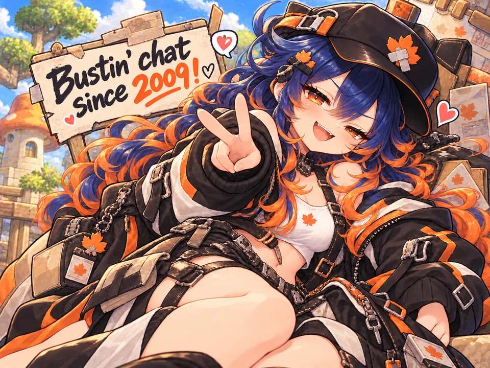
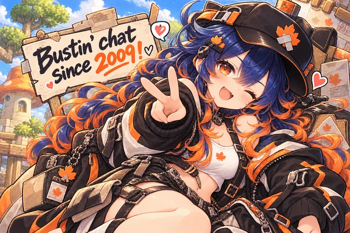

Slums Story · World Bera · friends only
SlumsMS is a small, friends-only private server. The towns are full of thousands of player bots who train, trade, gossip, form guilds and fall in love. Party with them and they'll greet you next time. KS them and they'll hold a grudge.


@botdrama off keeps everyone friendly.@guide to see it again.More detail, including what to do if Windows or your antivirus warns you and the fix for the Parsec start-up error, is in Getting started.